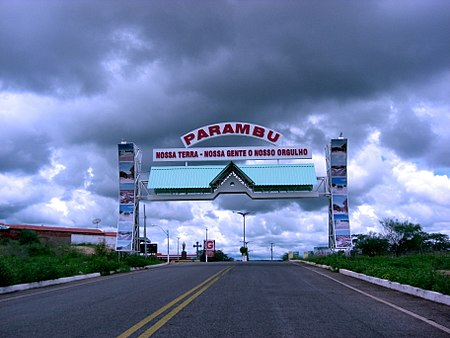
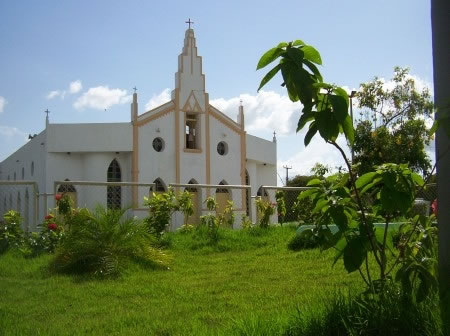

Informações técnicas sobre relevo, população, IDH etc.
| INFORMAÇÕES | |
|---|---|
| Municípios limítrofes | Quiterianópolis, Tauá, Arneiroz, Aiuaba; Pio IX e Pimenteiras do estado do Piaui. |
| Fundação | 15 de setembro de 1956 (65 anos) |
| Área total | 2 303,540 km² |
| Clima | Semi-árido |
| IDH | 0,570 — baixo |
| PIB | R$ 108 010,338 mil |
| INFORMAÇÕES TERRITORIAIS | |
|---|---|
| Número de habitantes | 31 521 habitantes |
| Superfície de Parambu |
231 240 hectares
2312,40 km² (892,82 sq mi) |
| Densidade populacional | 13,6 ha./km² |
| Altitude de Parambu | 467 metros de altitude |
| Coordenadas geográficas decimais |
Latitude:
-6.20943
Longitude: -40.6948 |
| Coordenadas geográficas sexagesimais | Latitude: 6° 12' 34'' Sul , Longitude: 40° 41' 41'' Oeste |
| INFORMAÇÕES DO MUNICÍPIO | |
|---|---|
| Endereço da Prefeitura Municipal de Parambu |
Parambu
Prefeitura de Parambu
Rua Santa Rosa, 2 Parambu - CE, 63680-000 Brasil |
| Telefone da prefeitura |
(88) 3448-1194
Internacional: +55 88 3448-1194 |
| Fax |
Não disponível
|
| Endereço electrónicoda prefeitura |
Não disponível
|
| Site oficial do município | parambu.ce.gov.br |
| INFORMAÇÕES DO ADMINISTRATIVAS | ||
|---|---|---|
| Prefeito de Parambu | ROMULO MATEUS NORONHA | |
| Partido politico | SOLIDARIED | |
| INFORMAÇÕES DE TRANSPORTE | |
|---|---|
| Transporte urbano disponível | - |
| Aeroporto |
Aeroporto de Picos 132 km
Aeroporto Regional do Cariri
193.5 km
Aeroporto de Floriano
265.1 km
|
| INFORMAÇÕES DE DISTÂNCIA A OUTRAS CIDADES | ||
|---|---|---|
| São Paulo : 2032 km | Rio de Janeiro : 1878 km | Brasília : 1326 km |
| Salvador : 790 km | Curitiba : 2326 km | Belo Horizonte : 1555 km |
| Manaus : 2172 km | Fortaleza : 366 km mais perto | Recife : 674 km |
| Goiânia : 1493 km | Belém : 1016 km | Porto Alegre : 2872 km |
| Guarulhos : 2012 km | Campinas : 1980 km | São Luís : 573 km |
| Distância calculada em linha reta! | ||
Conheça mais sobre a história de Parambu.
Parambu localiza-se no território que foi habitado, antes da chegada das entradas vindas do Pernambuco, pelos índios jucás, Candandus e Inhamuns. Com a doação de sesmarias ao longo do rio Puiú ao Sr. Manoel de Sousa Vale e sua esposa Leonarda Bezerra Vale, Pais de Maria Madalena de Sousa Vale, foi construido a Fazenda Cachoeirinha. Maria Madalena era esposa do Sr. Enéas de Castro Feitosa no primeiro matrimônio do mesmo em que fixaram sua residência na sede da fazenda e doou 6,4 hectares de terras e edificou uma capela para São Pedro. Assim, disseminaram a criação de gado bovino na região, formado em torno das fazendas de gado e da capela, cujo patrimônio foi doado em 1772 por Enéas de Castro Feitosa. Chamou-se primitivamente Cachoeirinha e logo depois São Pedro da Cachoeira, sucessivamente. Dessa capela e fixação de novos gergamentos, gerou-se a povoação, se bem que em ritmo lento e de progresso igualmente ronceiro.
Com um aglomerado de residências, começou a se formar uma vila. A vila pertencia politicamente a administração de Tauá. Fazendo parte do Distrito de Marrecas. No dia 2 de agosto de 1929, através da lei estadual nº2677, foi escolhido sede do Distrito e denominou-se São Pedro da Cachoeirinha. No dia 28 de março de 1936 nas eleições municipais de Tauá, elegeu-se o Sr. José Noronha de Meneses vereador pelo Distrito. O decreto nº 448 de 30 de dezembro de 1943 simplificou o nome sendo apenas cachoeirinha e posteriormente denominou-se Parambu.
Em 1946 elegeu-se vereador pelo Distrito Parambu o Sr. Nelson Zacarias Noronha sendo reeleito em 50 e 54. Na eleição de 54 elegeram-se vereadores: Inácio Ferrer Feitosa, José de Araújo Feitosa, José Permino Noronha, Nelson Zacarias de Noronha e Odilom Vieira Gomes. Em 1954 iniciaram a campanha para emancipação política do Distrito. O município de Tauá criou as subprefeituras e Parambu teve os subprefeitos: Antonio Adil Nóbrega da Veiga, Joaquim Augusto Bezerra, José Noronha Menezes, Cazé Noronha, Baiardo Moreira, Joaquim Carlos, Padre Argemiro Rolim de Oliveira e Joaquim Solano Feitosa. No dia 28 de fevereiro de 1954 aconteceu o plebiscito que teve 904 votos a favor e 1 contra e assim, Parambu passou a categoria de município, ficando o nome Parambu ( de origem indígena, pequena cachoeira).
Parambu foi criado pela lei Nº 3338 de 15 de setembro de 1956 e instalado simbolicamente em 22 de outubro de 1956, onde o governador Paulo Sarasati nomeou o prefeito interino, o Sr. Joaquim Solano Feitosa que renunciando, o Padre Argemiro Rolim de Oliveira assumiu a prefeitura. No dia 4 de agosto de 1957 foi o município instalado oficialmente e realizadas as primeiras eleições municipais, tendo sido eleito o Sr. Francisco Alves Teixeira primeiro prefeito municipal, sem vice-prefeito.
Saiba mais sobre os melhores lugares e o que fazer em Parambu.
Parambu integrava o território da antiga Paróquia de Cococi, criada por lei Provincial de 28 de setembro de 1863. Depois esteve anexada a Arneiroz e Tauá. Antes chamada Cachoeirinha a localidade tomou o nome de Parambu pelo Decreto Lei Nº 1.114, de 30 de dezembro de 1943. O Distrito de São Pedro de Cachoeirinha foi desmembrado de Marecos. A primeira Igreja foi construída por Enéas de Castro.

Veja como chegar nos melhores pontos de Parambu.